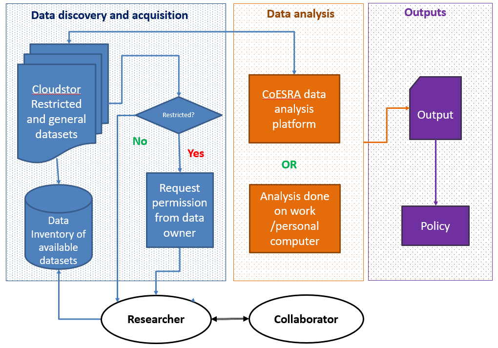

Examples of how to use CARDAT
Getting set up
Instructions for logging in can be found here.
Workflow

An example of a CARDAT
workflow:
- Research project: what is the research question that you would like to analysis and who you will be working with.
- Data discovery and acquistion: are the datasets you need available in the data inventory catalogue? If not, find the data elsewhere,
but consider providing it to CARDAT for publication so
that it can be available to others. If the data you want is in the CAR Data Inventory
then access it (or request permission to access it if it is restricted).
- Data analysis: use either a CoESRA workstation,
or your own computer to analyse the data (see here
to help assess if using CoESRA is useful to you).
- Save scripts and analysis: document and save the scripts used in your analysis. If this is done in CoESRA, then the
work can be accessed by others. These scripts should ideally be kept with the output of data so that the workflow
is transparent and reproducible.
- Syncronise data as you go: data can be syncronised with CloudStor or CoESRA as you go, this makes it easier to
have a single master copy of the data.
- Publish outcomes: publish the results of your analysis. Don't forget to acknowledge the data using the citations
in the data inventory, and to link to the scripts used to create the data.